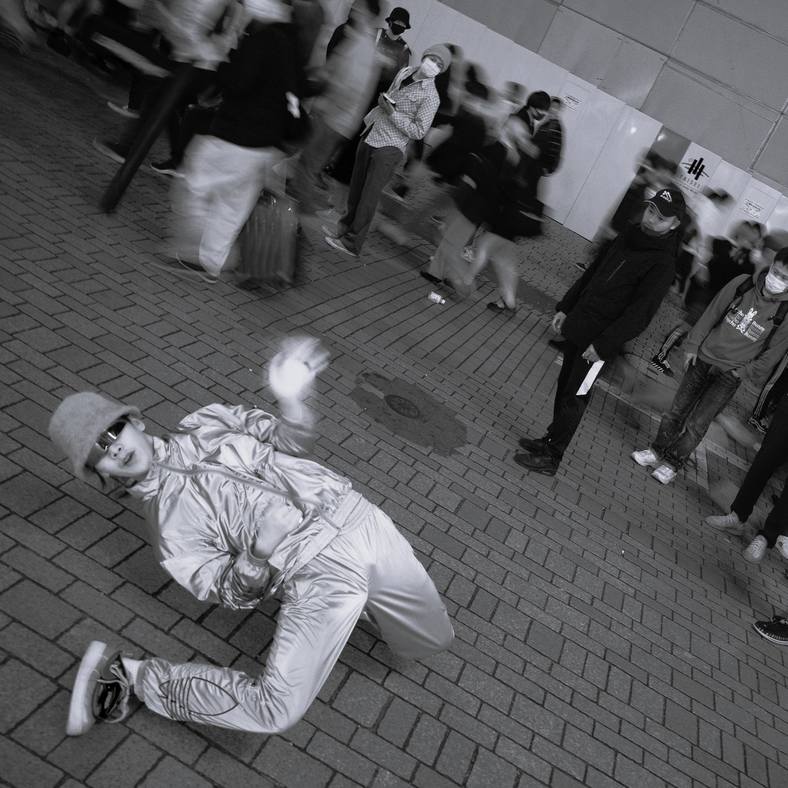

Busking
Performances happen in public spaces like streets or parks..
Shows are live, informal, and often spontaneous.
Performers interact directly with people passing by.
Shows are live, informal, and often spontaneous.
Performers interact directly with people passing by.